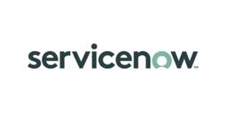
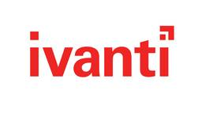
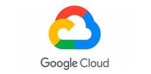
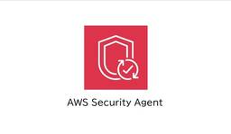

TechHarmony
https://blog.usize-tech.com
エンジニアブログ by SCSK
フィード

【ServiceNow】頼れる門番「動的フィルターオプション」
TechHarmony
こんにちは！ SCSK株式会社 小鴨です。 3割20本と、2割40本では前者の方が好みのバッターです。 今日はServiceNowの「動的フィルターオプション」という機能についてご説明します。 ゆったりのんびり聞いていた […]
1日前
【ServiceNow】「ServiceNow」におけるAIとの付き合い方
TechHarmony
こんにちは！ SCSK株式会社 小鴨です。 メッシが大好きだけどスペインが勝つだろうなと予想していました。 今日はここ数年間、開発業務にAIを使ってきた経験から学んだことを話していこうと思います。 ポイントはServic […]
1日前

「見えない資産」は守れない。旧LANDeskから正当進化した『Ivanti Endpoint Manager』が紐解く、2026年最新のIT資産管理（ITAM）現実解
TechHarmony
みなさん、こんにちは！SCSKの石井です。 酷暑が和らぎ、秋の風が心地よく感じる9月。ですが、情シスの皆さまの「脆弱性対応の熱」は一向に下がる気配がありませんよね（笑）。 実は今、サイバー空間では「CVSS（脆弱性評価値 […]
1日前

【2026年最新金融セキュリティ】AI時代のダークウェブ脅威をミリ秒で制圧！「Deep Instinct」が暴くEDR限界説とSCS評価制度の全貌
TechHarmony
みなさん、こんにちは。SCSKの石井です。 突然ですが、皆様は子どもの頃、お小遣いをどこに保管していましたか？貯金箱でしょうか、あるいは引き出しの奥深くでしょうか。 誰もが「大切な資産をいかにして守るか」という原始的な防 […]
1日前

【番外編】WSFCへDataKeeperボリュームを手動登録する方法
TechHarmony
こんにちは SCSK 野口です。 前編・後編では、WSFCの構築後に DataKeeperの同期設定を行う手順について解説しました。 しかし実務では、DataKeeperのジョブ作成を先行させた場合や、構成時のダイアログ […]
2日前
SCS評価制度（サプライチェーン強化に向けたセキュリティ対策評価制度）★4取得に向けたネットワーク分離への取り組み
TechHarmony
殆どの企業で対応が必要となっている「サプライチェーン強化に向けたセキュリティ対策評価制度（SCS評価制度）」と「★4」取得に向けた技術的対策、ネットワーク分離についてご紹介します。 エグゼクティブサマリー […]
2日前

受賞者リレーインタビュー！第21弾：長谷川 慎さん
TechHarmony
TechHarmonyエンジニアブログでは、AWS・Oracle Cloud・Azure・Google Cloud 各分野の受賞者にフォーカスし、インタビューを通してこれまでの経歴や他の受賞者に聞いてみたいことをつないで […]
2日前
【ハンズオン】PC不要？ Claude CodeをLightsailで動かし、Claudeモバイルアプリだけでアプリを作る
TechHarmony
導入 自宅のWindows PCにClaude Codeをインストールして使っている、という方は多いのではないでしょうか。しかし、いざ外出先でも開発を続けたいとなると、そのためだけに自宅PCの電源を入れっぱなしにしておく […]
2日前

【新入社員がGoogle Cloudを触ってみた】Gemini Enterprise Agent PlatformにADKを使ってAgentをデプロイしてみる。
TechHarmony
こんにちは。SCSKの佐子です。 Google Cloudの勉強を始めて2週間が経ちました。 まだまだ理解が追いつかない部分ばかりですが、少しずつ知識を積み重ねながら成長していきたいと思っています。 今回は、これまでの学 […]
2日前

AWS Security Agentで自分のサイトにペネトレーションテストをしてみた
TechHarmony
本記事は 夏休みクラウド自由研究2026 8/31付の記事です。 みなさま、こんにちは 夏バテで晩御飯がアイスになっていた。どうもいとさんです。 先日、AWSの新機能「AWS Security Agent」を使って、自分 […]
2日前

WordPressサイトにAIチャットを追加する 〜前編：RAGをつくる〜
TechHarmony
本記事は 夏休みクラウド自由研究2026 8/30付の記事です。 こんにちは、SCSKの木澤です。 当サイトも記事数が約1,800に達し、全文検索でお目当ての記事が表示されるまでに手間がかかることが増えてきました。 最近 […]
3日前

CatoクラウドのIPv6対応の構成パターン（2026年8月版）
TechHarmony
本記事は 夏休みクラウド自由研究2026 8/29付の記事です。 Catoクラウドでは、今年3月にSocketによるPoP接続がIPv6対応したというアップデートがありました。 CatoクラウドのIPv6対応どこまで進ん […]
4日前
【新入社員がGoogle Cloudを触ってみた】Agent DesignerによるIT用語学習エージェント
TechHarmony
こんにちは！今年度から入社しました、SCSKの松浦です。 配属されて約一か月が経過しました。 この1か月で一番感じたことは、 「業務で飛び交う用語が全くわからない！」 ということです。 会議やGoogle Cloudの学 […]
5日前

Mac+Mavenで行うJava 25のAWS Lambda開発・デプロイして方法をまとめました
TechHarmony
本記事は 夏休みクラウド自由研究2026 8/28付の記事です。 皆さん、こんにちは！ 夏に入ってからかき氷を食べれていなくてそろそろ秋になってしまいそう。いとさんです。 夏休みは自由研究よりも夏期講習！習い事！キャンプ […]
5日前
【日常運用・障害試験で役立つ！監視・通知・トラブルシューティング術 #1】異変を逃さない！メール通知の「落とし穴」と、原因を読み解くログ監視の極意
TechHarmony
LifeKeeperの『困った』を『できた！』に変える！サポート事例から学ぶトラブルシューティング＆再発防止策 こんにちは、SCSKの前田です。 いつも TechHarmony をご覧いただきありがとうございます。 連載 […]
5日前
LifeKeeper for WindowsのLKCLIを使ってみた。
TechHarmony
こんにちは、SCSKの伊藤です。 以前、Linux版でLKCLIについてご説明させていただきましたが、Windows版でもバージョン10.1でLKCLIが実装されました。 本記事では、Windows版のLKCLIを使った […]
5日前
Zero Networksのセグメントサーバ導入から通信可視化・自動ポリシー生成までを実機検証
TechHarmony
こんにちは！ 前回の記事では、Zero Networksのネットワーク層MFAを利用し、通信をトリガーとした認証要求から、一時的な通信許可、ルールの自動失効までの一連の動作を検証しました。 Zero Networksの特 […]
6日前
【CVSS評価の終焉】金融庁が警鐘を鳴らすフロンティアAIの脅威に勝つ「リスクベース脆弱性管理」の真実：Ivanti Neuronsが導く次世代エンドポイント運用の現実解
TechHarmony
みなさん、こんにちは。SCSKの石井です。 2026年8月、いよいよ来月に迫った「愛知・名古屋アジア競技大会」の直前イベントや公式チケット発券のニュースで、日本中がスポーツ一色の熱気に包まれていますね！私も大好きな手羽先 […]
6日前
WannaCryの悲劇を繰り返すな！Cato×Deep Instinct×Zero Networksで構築する「AI時代の3次元ゼロトラスト防御最強説」とSCS評価診断の経済性
TechHarmony
本記事は 夏休みクラウド自由研究2026 8/27付の記事です。 みなさん、こんにちは。SCSKの石井です。 2017年、世界中を恐怖に陥れたランサムウェア「WannaCry（ワナクライ）」。Windows […]
6日前

CatoDNSへの切り替えガイド
TechHarmony
本記事は 夏休みクラウド自由研究2026 8/27付の記事です。 Catoクラウドのサポートを行う中で、DNS設定に関して、推奨設定となっていないケースをお見かけします。 本記事では、Cato環境でよく見ら […]
6日前

【Cortex Cloud】CloudScanでGCPを接続してみた
TechHarmony
はじめに こんにちは、山崎です。 今回は、Cortex CloudにGCPプロジェクトを接続し、Asset Inventory画面で接続したGCPプロジェクトのクラウドアセットが表示されていることを確認してみようと思いま […]
7日前

【Google Cloud】リソースのTerraform 形式へのエクスポート方法
TechHarmony
こんにちは。SCSKの森戸です。 初の投稿です。皆様温かい目でご覧いただけると幸いです。 初回は「Google CloudリソースのTerraform形式へのエクスポート方法」について紹介します。 コンソール画面から手動 […]
7日前
AI Assistantがさらに進化！ 調査・分析だけじゃない運用アクションを試してみた
TechHarmony
本記事は 夏休みクラウド自由研究2026 8/26付の記事です。 こんにちは。廣木です。 以前、Catoの「Advanced AI Assistant」について紹介させていただきました。 【Catoクラウド】Advanc […]
7日前

フロンティアAI時代の脆弱性管理、追いつかないパッチ適用から「封じ込め」戦略へ
TechHarmony
SCS評価制度（★4基準）において、重大な脆弱性に対するアップデートプログラムの適用は、原則リリースから14日以内に行うことが求められていますが、AIによる攻撃は、メーカやベンダーがパッチを公開する1週間前から始まってお […]
8日前
VPC Private subnet 上の Ubuntu 24.04 EC2 デスクトップ環境に Amazon DCV でセキュアに接続する(前編)
TechHarmony
本記事は 夏休みクラウド自由研究2026 8/25付の記事です。 この記事は前編・中編・後編の3部構成です。 – 前編 (この記事) : VPC Private subnet 上の Ubuntu 24.04 […]
8日前
ガートナーのマジック・クアドラント 2026年 SASEプラットフォームが公表 Cato Networksは3年連続でリーダーに選出
TechHarmony
※引用：https://www.catonetworks.com/ja 2026年7月28日、ガートナー（Gartner™）のマジック・クアドラント（Magic Quadrant™）で、2026年版 SASEプラットフォ […]
8日前
AWSネットワークにおけるSaaSへの接続方式まとめ 〜PrivateLink編〜
TechHarmony
本記事は 夏休みクラウド自由研究2026 8/24付の記事です。 残暑見舞い申し上げます。皆様いかがお過ごしでしょうか。 AWS内製化支援「テクニカルエスコート」担当の間世田です。 今回は、SaaS提供する際の利用者との […]
8日前
Zero Networksの特許機能「ネットワーク層MFA（JITアクセス）」を実機検証 ～WFPで実現するRDP保護とラテラルムーブメント対策～
TechHarmony
前回の記事では、Zero Networksとは？としてサービス概要や「封じ込め（Containment）」の重要性について詳しくご紹介しましたが、今回は、Zero Networksが持つ最大の強みであり、特許取得済みの機 […]
9日前
【EDR限界説2026】「次世代エンドポイント（NGES）」の嘘と真実： Catoクラウド×ディープラーニングAIで実現する『ミリ秒予測予防』のゼロトラスト最終解答
TechHarmony
みなさん、こんにちは。SCSKの石井です。 これまで本ブログでは、自律思考型フロンティアAI「Claude Mythos」がもたらす超高速ハッキングの衝撃や、日本の誇る世界的AIレジェンド・甘利俊一先生の 「情報幾何学」 […]
9日前
【Catoクラウド】新機能！「Client Management」でデバイスを管理する
TechHarmony
本記事は 夏休みクラウド自由研究2026 8/23付の記事です。 Catoクラウドのデバイス管理機能「Client Management」について解説します。 はじめに Catoクラウドへの接続方法は複数存在し、その中で […]
10日前
AWS上のvSocket HA構成でルーティング切り替えを実現した話
TechHarmony
本記事は 夏休みクラウド自由研究2026 8/22付の記事です。 こんにちは。Catoエンジニアの中山です。 今回は、AWS上でvSocketのHA構成を検討した際に直面したルーティングの課題と、その解決策についてご紹介 […]
11日前
AIはZabbixのトラブルにどこまで答えられる？ ～よくある運用課題で検証してみた～
TechHarmony
ChatGPTやMicrosoft Copilotをはじめとする生成AIの普及により、技術的な調査やトラブルシュートでもAIを活用する機会が増えてきました。 私自身も日々の業務の中で、障害の切り分けや原因調査の第一歩とし […]
12日前
【初級編】2026年度開始「SCS評価制度」の基礎知識と、サプライチェーン防衛への第一歩
TechHarmony
みなさん、こんにちは。SCSKの石井です。 お盆も過ぎて8月も後半に入ると、夕暮れ時に聞こえるツクツクボウシの鳴き声が、なんだか急に寂しさを誘いますね。 あんなに猛烈だった真夏の太陽が少しずつ遠ざかり、どこか […]
12日前
自分の好きなLLMをAmazon Bedrockにインポートして動かしてみよう！
TechHarmony
本記事は 夏休みクラウド自由研究2026 8/21付の記事です。 こんにちは、ひるたんぬです。 私はあくびをしている人を視認した場合、9割くらいの確率であくびがうつります。 では、なぜあくびがうつるのでしょうか？ 現時点 […]
12日前
SDGsとESGって何？〜「止まらないIT」が社会と会社を救う理由
TechHarmony
こんにちは、SCSK 池田です。 近年、「SDGs」「ESG」という言葉をよく耳にしますが、実は、ITシステムの「止まらなさ」が、これらのキーワードと深く関わっているんです。 SDGs（エスディージーズ）＝国が決めた「2 […]
13日前
WSUSリプレイスの本命はどこか？ Ivantiで始めるパッチ管理・エンドポイント管理・IT資産管理の現実解
TechHarmony
みなさん、こんにちは。SCSKの石井です。 気がつけば、朝の空気にほんの少しだけ“夏の終わり”が混じるようになってきましたね。とはいえ、昼間はまだまだ暑い。 PCのファンも、情シスの皆さまの心拍数も、なかなか下がってくれ […]
13日前
【序章編】2026年度開始「SCS評価制度」とは？ 簡単に解説しよう。サプライチェーンの『セキュリティ見える化制度』・・・
TechHarmony
みなさん、こんにちは。SCSKの石井です。 8月も後半戦。コンビニの棚に秋味っぽいお菓子が並び始めると、「夏、終わるの早くない？」と少しだけ寂しくなります。とはいえ、外に出ればまだまだ灼熱。 冷たいアイスコーヒ […]
13日前
保存時か、クエリ時か？CloudWatch Logs のログエンリッチメントを使い分ける
TechHarmony
本記事は 夏休みクラウド自由研究2026 8/20付の記事です。 2026年、CloudWatch Logsにはログをエンリッチする2つの機能として、Logs InsightsのlookupコマンドとLookupプロセッ […]
13日前
製造業の止められないラインを守り抜く、ゼロトラスト時代における「非破壊的」マイクロセグメンテーション
TechHarmony
1時間の停止も許容できない日本の製造現場におけるサイバー脅威への「先制型サイバーレジリエンス」な「非破壊的（Non-disruptive）」解決策としてマイクロセグメンテーションをご紹介いたします。 製造現場を襲うサイバ […]
14日前
Zabbixで一狩りいこうぜ！クエスト結果を監視してみた
TechHarmony
こんにちは、SCSKの坂木です。 Zabbixでモ〇ハン、したくないですか？ そんな思いつきから、本ブログではZabbixダッシュボード上で遊べる「3Dハンティングアクションゲーム」を実際に作ってみました。 さらに、ただ […]
14日前
CATOクラウド（SASE）×Deep Instinct（次世代エンドポイント）最強説！経済的メリットとSCS評価制度・社内セキュリティ監査への劇的な効果とは！
TechHarmony
本記事は 夏休みクラウド自由研究2026 8/19付の記事です。 みなさん、こんにちは。SCSKの石井です。 暑い🥵、暑い💦。。あっ。。暑い🥵は禁句・・・ アツいを「暑い」⇒「熱い🔥」に変えて、先ずはココ（↓）に注目！ […]
14日前
AI-DLC v2をプロジェクトの途中から導入できる? 小さなアプリでAI-DLC v2を検証してみた
TechHarmony
本記事は 夏休みクラウド自由研究2026 8/19付の記事です。 こんにちは。SCSK品田です。 私は趣味として、2人専用の動画共有アプリを、休みの日にひとりで細々と開発しています。 AWSが「AI-DLC」という開発手 […]
14日前
Cisco Duoの認証機能を試してみた① 〜Duo Mobile編〜
TechHarmony
こんにちは。こにしです。 今回から新たに「Cisco Duoの認証方式」をテーマとした、全4回の連載シリーズをスタートします。本連載では、日々進化するサイバー攻撃からシステムとデータを守るために、これからの時代に求められ […]
15日前
導入・運用負荷を最小化する次世代マイクロセグメンテーション ～Zero Networksがいま注目されている理由～
TechHarmony
こんにちは。SCSKの都築です。 昨今、AI技術の進化とともに企業を取り巻くサイバー攻撃はますます巧妙化しており、実際に大きな影響を及ぼすセキュリティインシデントも相次いでいます。そうした背景もあり、マイクロセグメンテー […]
15日前
【AWS】Kiroのコストの管理コストはいくらかかるのか？
TechHarmony
本記事は 夏休みクラウド自由研究2026 8/18付の記事です。 こんにちは。tknです。 近年厳しい、とても厳しい暑さが続きますが皆様いかがお過ごしでしょうか。 天気予報を見て「週末の最高気温は36℃, 37℃です！」 […]
15日前
【EDR限界説】超自律型AI「Claude Mythos」の猛威に立ち向かう！ Deep Instinct × Zero Networksがもたらす「実行前予防×横移動完全ブロック」の最強エンドポイント防衛シナジー
TechHarmony
本記事は 夏休みクラウド自由研究2026 8/18付の記事です。 みなさん、こんにちは。SCSKの石井です！ 最近、サイバーセキュリティの界隈を大きく震撼させているニュース、もう耳にされましたでしょうか？ […]
15日前
2026年ランサムウェア対策、LOTL（自給自足型）攻撃に対抗するサイバーレジリエンス
TechHarmony
直近のランサムウェア被害から、2026年のランサムウェア対策においては、「侵害を前提（Assume Compromise/Assume Breach）」とする「ブラスト半径・影響範囲（Blast Radius）の最小化」 […]
16日前
ServiceNow開発・検証を加速するPDI活用術
TechHarmony
ServiceNowの導入や運用を進める中で、 顧客環境では試験しづらい 新機能をすぐに試したい 外部連携の挙動を事前に確認したい 設計内容が本当に実現可能か検証したい といった場面に遭遇することがあります。 そのような […]
16日前
仮想パッチとは？「パッチが追いつかない」時代の防御策を解説 ― 金融庁・日本銀行の要請を読み解く
TechHarmony
こんにちは。トレンドマイクロ TippingPoint 製品担当です。 今回は、2026年5月に金融庁・日本銀行から発出された「フロンティアAIによる脅威変化を踏まえた金融機関等の短期的な対応」に係る要請をテーマに、仮想 […]
16日前
次世代IPS「TippingPoint」とは？ 仮想パッチとZDI連携でゼロデイ脆弱性を防ぐ仕組み
TechHarmony
はじめまして！本日から、セキュリティ技術や最新のITソリューションについて分かりやすく解説していく技術ブログをスタートします。 初回のテーマは、IPS（侵入防御システム）の代表的な製品である TippingPoint に […]
16日前